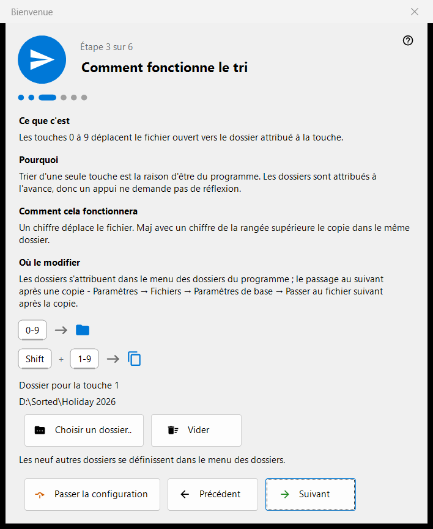
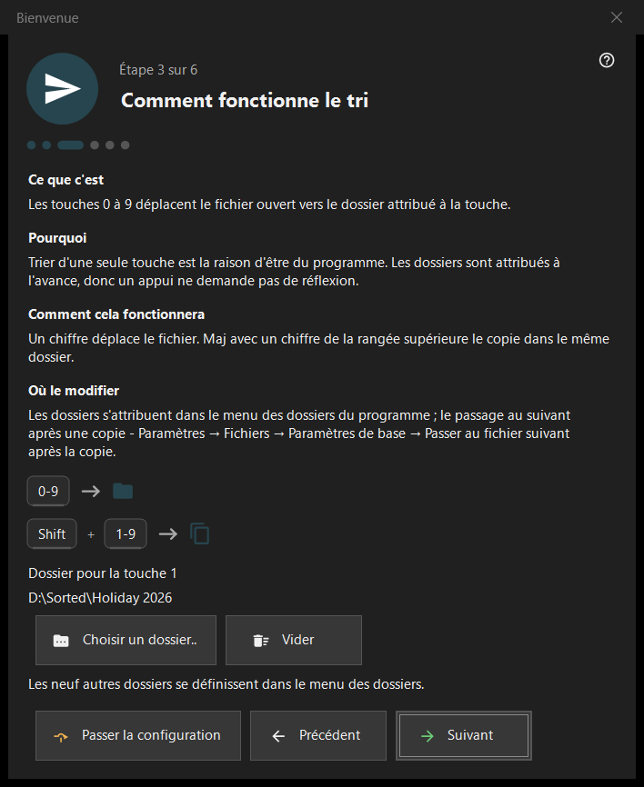

Bienvenue
Bienvenue
Objectif
Les étapes d'accueil configurent l'essentiel en quelques minutes : la langue, l'apparence, le dossier de la touche 1, la suppression et les associations de fichiers. Elles s'ouvrent au premier lancement, avec le bouton «Configuration initiale» de l'écran vide de la visionneuse et avec l'option «Afficher à nouveau les étapes d'accueil» de la page «Général» des Paramètres. Elles n'existent que dans la version 64 bits.


Dans cet ordre
- Choisissez la langue.
- Choisissez le schéma d'arrière-plan et l'action de la molette.
- Choisissez le dossier de la touche 1.
- Lisez comment fonctionne la suppression.
- Définissez les associations de fichiers.
- Vérifiez le récapitulatif et appuyez sur «Terminer». «Suivant» passe à l'étape suivante, «Précédent» revient en arrière, «Passer la configuration» saute à la dernière étape.
Les éléments
Langue de l'interface
La fenêtre change de langue aussitôt, en aperçu ; la visionneuse ne l'adopte qu'avec «Suivant». Si l'on ferme la fenêtre sans l'avoir utilisé, la langue de la visionneuse est rétablie.
Apparence
Choisissez le schéma d'arrière-plan de la zone d'image (Par coin, Noir, Blanc, Par bord, Par le haut, Par le bas) et l'action de la molette : soit elle zoome au niveau du curseur et les flèches parcourent les fichiers, soit elle parcourt les fichiers et Ctrl+molette zoome. Les deux choix peuvent être modifiés plus tard dans la page «Images» des Paramètres.
Comment fonctionne le tri
Les chiffres 0-9 déplacent le fichier courant vers un dossier ; Shift plus un chiffre de la rangée du haut le copie. Le dossier de la touche 1 se choisit avec «Choisir un dossier..» ; les neuf autres se définissent plus tard dans la page «Destinations» des Paramètres. Si un dossier a disparu, l'étape le signale : «Ce dossier n'est plus disponible. Choisissez-en un autre.»
Suppression sûre
Montre comment fonctionnent Del (vers la Corbeille) et Shift+Del (définitive). Les options de suppression se trouvent dans la page «Fichiers» des Paramètres.
Ouvrir les images ici
Permet à ce programme d'ouvrir les images et les vidéos depuis l'Explorateur. L'étape n'apparaît que si le programme n'est pas installé en tant que package du Microsoft Store ; elle s'applique à votre compte utilisateur et ne demande aucun droit d'administrateur.
Tout est prêt
Le récapitulatif énumère chaque réglage, sa valeur et l'endroit où le modifier. Si des composants serveur sont installés sur ce PC, le bloc «Serveurs sur ce PC» présente chacun avec son état et le bouton «Ouvrir le gestionnaire» ; si aucun n'est installé, le bloc est masqué.
Parties d'une étape
Chaque étape comporte quatre parties : «Ce que c'est», «Pourquoi», «Comment cela fonctionnera» et «Où le modifier».